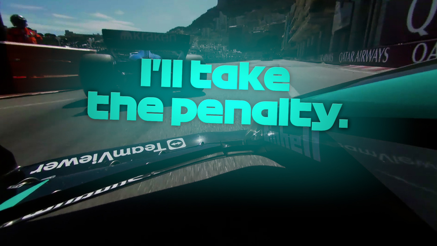

Copyright © 2025 Autocar India.
In the gilded streets of Monte Carlo, where yachts line the harbor like bored influencers and champagne flows faster than most of the cars, the 2025 Monaco Grand Prix unfolded exactly as expected: beautiful, dramatic, painfully processional — and just fast enough to keep you from changing the channel.
But amidst the glitz, drama, and race strategy that would confuse even the most hardened F1 nerds, this year's Monaco GP delivered one clear message:
"Street racing isn't always about overtakes — sometimes it's about passive-aggressively holding up your rivals while sipping espresso in the cockpit."

Copyright © 2025 Autocar India.
The King of the Croissant Kingdom: Lando Norris
Lando Norris, everyone's favorite former Twitch streamer turned Ferrari-slayer, absolutely dominated the weekend. He secured pole position with a lap that was more a flex than a time attack (1:09.954, in case you're into foreplay), and then led the race with the kind of effortless control that made the rest of the grid look like they'd shown up for a go-kart birthday party.
His race pace was a masterclass in restraint — short-shifting through the hairpins, braking like he had feelings, and deploying ERS like he was saving it for a wedding night. The telemetry showed him lifting and coasting through sectors 1 and 3 like he'd memorized the Monaco city planner's nightmares. And yet, he still dropped the fastest lap on the last lap of the race — pure McLaren sauce.
Ferrari and Leclerc: The Annual Tragedy
Homeboy Charles Leclerc, once again playing the tortured prince of Monaco, started second and finished second — which, let's be real, is probably a win by Ferrari standards. Despite running on fresh softs and a pit crew that, for once, didn't fumble like a wet papad, Leclerc simply couldn't match Norris's clean air supremacy.
Telemetry revealed that while Charles was faster on corner exits, he was losing precious milliseconds in the narrow middle sector — possibly because he could feel the collective weight of an entire nation's expectation crushing his rear suspension.
Oscar Piastri: The Silent Assassin
The quietest man in F1 nearly made the loudest noise. Oscar Piastri, who gives off "school prefect but builds illegal street bikes on weekends" energy, came within 0.1 seconds of stealing second place from Leclerc. Had there been a few more laps, a mild tailwind, or a small prayer circle, we'd have witnessed the most polite overtake in Monaco history.
His telemetry told the story of clinical cornering, hitting every apex like a surgeon with caffeine withdrawal. He didn't win, but boy, did he send a message.
Max Verstappen and the Curious Case of the Dead Strategy
Let's talk about Max Verstappen, who spent most of the race sounding like a guy who booked a Ferrari experience package and got a Fiat Punto. Red Bull's "bold" (read: doomed) strategy of leaving Max out longer than an awkward goodbye hug at an Indian wedding didn't pay off. When he finally pitted, the traffic jam was already sponsored by Netflix.
Max's radio summed it up:
> "These shifts feel like I'm back in '73. What are we doing?"
Answer: Not overtaking. Not winning. Not smiling.

© 2003-2025 Formula One World Championship Limited
Russell, Albon & The Chicane That Broke F1
Midfield drama peaked when George Russell yeeted through the Nouvelle Chicane like it owed him money and casually refused to give the position back to Alex Albon.
Russell, over radio, declared:
> "I'll take the penalty. He was driving like a school bus."
That's the Monaco energy. Drive through someone's soul, smile for the cameras, and take the penalty like it's an Uber surcharge.
Albon, for his part, responded with the energy of a man who's run out of synonyms for "idiot." The FIA, meanwhile, issued a drive-through penalty, proving once again that if you break the rules hard enough in Monaco, they actually do something about it.
Yuki Tsunoda: The Unfiltered Legend
No Monaco race is complete without a Tsunoda meltdown, and 2025 did not disappoint. After Gasly's bold but doomed dive bomb into Rascasse, Yuki asked:
> "Is he drunk or just stupid?"
We may never know. But what we do know is that Tsunoda on team radio is the best reality TV you're not paying for.
Strategy or Sabotage? You Decide.
With overtaking practically illegal in Monaco, teams resorted to tactics straight out of a Mafia playbook. Mercedes, Williams, and Racing Bulls all played the "hold them up" game to help their teammates pit safely — turning the race into an exercise in psychological warfare and blue flag denial.
The real winners? Anyone who pitted early and had the mental fortitude to drive clean air laps for 40 minutes straight without losing their mind.

© 2025 Motorsport Network
Final Classification
1. Lando Norris - Fastest lap, driest humor
2. Charles Leclerc - Cursed by postcode
3. Oscar Piastri - No vocals, the Silent Assassin
Verdict: Monaco 2025
Glamour? ✔️
Drama? ✔️
Overtakes? Oh there were a lot of 'em!
Memes? Abundant.
Race relevance? Who cares. It's Monaco, baby.
In a world obsessed with speed, Monaco remains the one race where it's not about how fast you go — it's about how fabulously petty you can be while crawling at 140 km/h in a $15 million car.